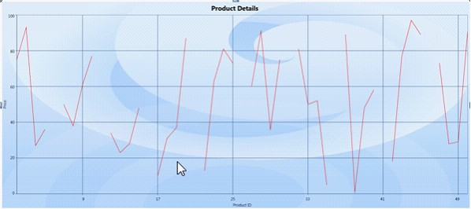

Essential chart WPF is now supports Empty point for Fast Line Chart type.
The data collection that is passed to the chart may have NaN values, this is an empty points.
If data points bounded with chart does not give any value then chart renders empty points in chart series.
This feature is useful when you are not able to get exact value for a particular data.
e.g. In population analysis if you do not get the result for previous years then we can use Empty data value.
Adding Empty Point
Add Empty Point to the Chart, by using the following code.
Set ShowEmptyPoints to True to enable Empty Point.
|
[Xaml]
<syncfusion:ChartSeries Name="series1" ShowEmptyPoints="True" Type="FastLine" Interior="Red" Stroke="Black" DataSource="{Binding}"/> |
|
[C#]
Series1.ShowEmptyPoints = true; |
